일반기계기사 (2013-06-02 기출문제)
1과목: 재료역학
1. 직경 20 mm, 길이 50mm의 구리 막대의 양단을 고정하고 막대를 가열하여 40℃ 상승했을 때 고정단을 누르는 힘은 약 몇 kN 정도인가? (단, 구리의 선팽창계수 α = 0.16×10-4/℃, 탄성계수 E = 110 GPa 이다.)
- 52
- 25
- 30
- 22
(정답률: 62%)

2. 피로 한도(fatigue limit)와 가장 관계가 깊은 하중은?
- 충격 하중
- 정 하중
- 반복 하중
- 수직 하중
(정답률: 59%)
3. 그림과 같은 평면 트러스에서 절점 A에 단일하중 P = 80kN이 작용할 때, 부재 AB에 발생하는 부재력의 크기 및 방향을 구하면?
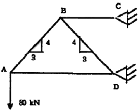
- 60 kN, 압축
- 100 kN, 압축
- 60 kN, 인장
- 100 kN, 인장
(정답률: 47%)
4. 그림과 같은 직사각형 단면을 갖는 기둥이 단면의 도심에 길이 방향의 압축하중을 받고 있다. x-x축 중심의 좌굴과 y-y축 중심의 좌굴에 대한 잉계하중의 비는? (단, 두 경우에 있어서의 지지조건은 동일하다.)
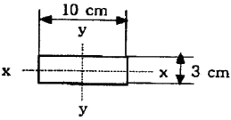
- 0.09
- 0.18
- 0.21
- 0.36
(정답률: 48%)
5. 길이 L = 2m 이고 지름 ø25mm인 원형단면의 단순 지지보의 중앙에 집중하중 400 kN이 작용할 때 최대 굽힘응력은 약 몇 kN/mm2 인가?
- 65
- 100
- 130
- 200
(정답률: 52%)
6. 단면이 정사각형인 외팔보에서 그림과 같은 하중을 받고 있을 때 허용응력이 σω이면 정사각형 단면의 한변의 길이 b는 얼마 이상이어야 하는가?
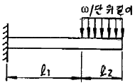
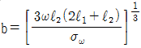
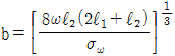
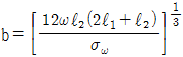
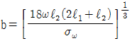
(정답률: 36%)
7. 재료가 순수 전단력을 받아 선형 탄성적으로 거동할 때 변형 에너지밀도를 구하는 식이 아닌 것은? (단, τ : 전단응력, G : 전단 탄성계수, ϓ : 전단 변형률)
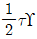
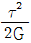
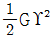
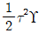
(정답률: 45%)
8. 두께 2mm, 폭 6mm, 길이 60m인 강대(steel band)가 매달려 있을 때 자중에 의해서 몇 cm가 늘어나는가? (단, 강대의 탄성계수 E = 210 GPa, 단위체적당 무게 ϓ = 78kN/m3 이다.)
- 0.067
- 0.093
- 0.104
- 0.127
(정답률: 41%)
9. 100 rpm으로 30 kW를 전달시키는 길이 1 m, 지름 7 cm인 둥근 축단의 비틀림각은 약 몇 rad인가? (단, 전단 탄성계수 G = 83 GPa이다.)
- 0.26
- 0.30
- 0.015
- 0.009
(정답률: 56%)
10. 원형단면 보의 지름 D를 2D로 2배 크게 하면, 동일한 전단력이 작용하는 경우 그 단면에서의 최대전단응력(ϓmax)는 어떻게 되는가?
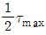
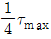
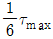
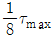
(정답률: 53%)
11. 회전반경 K, 단면 2차 모멘트 I, 단면적은 A라고 할 때 다음 중 맞는 것은?
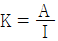
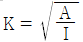
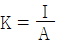
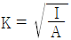
(정답률: 57%)
12. 그림과 같이 두 와팔보가 롤러(Roller)를 사이에 두고 접촉되어 있을 때, 이 접촉점 C에서의 반력은? (단, 두 보의 굽힘강성 EI는 같다.)
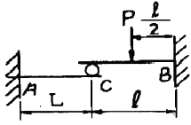
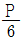
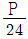
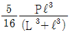
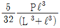
(정답률: 34%)
13. 바깥지름 do = 40cm, 안지름 di = 20cm인 중공축은 동일 단면적을 가진 중심축보다 몇 배의 토크를 견디는가?
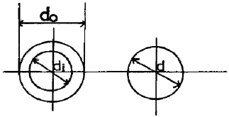
- 1.24
- 1.44
- 1.64
- 1.84
(정답률: 46%)
14. 지름 D인 두께가 얇은 링(ring)을 수평면 내에서 회전시킬 때, 링에 생기는 인장응력을 나타내는 식은? (단, 링의 단위 길이에 대한 무게를 W, 링의 원주속도를 V, 링의 단면적을 A, 중력 가속도를 g로 한다.)
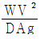
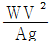
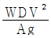
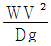
(정답률: 34%)
15. 그림과 같이 균일 분포하중을 받고 있는 돌출보의 굽힘모멘트 선도(BMD)는?
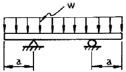
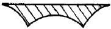
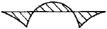
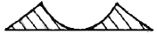
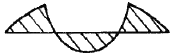
(정답률: 52%)
16. 평면 변형률 상태에서 변형률 εx, εy 그리고 ϓxy가 주어졌다면 이때 주변형률 ε1과 ε2는 어떻게 주어지는가?
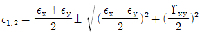
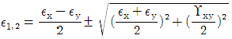
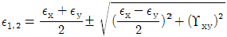
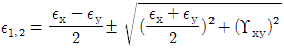
(정답률: 41%)
17. 그림과 같은 구조물에서 단면 m-n상에 발생하는 최대 수직응력의 크기는 몇 MPa인가?
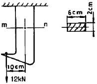
- 10
- 90
- 100
- 110
(정답률: 39%)
18. 길이가 L인 외팔보 AB가 오른쪽 끝 B가 고정되고 전 길이에 ω의 균일분포하중이 작용할 때 이 보의 최대 처짐은? (단, 보의 굽힘 강성 EI는 일정하고, 자중은 무시한다.)
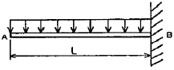
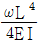
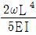
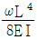
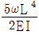
(정답률: 57%)
19. 다음 그림과 같이 집중하중을 받는 밑단 고정, 타단지지된 보에서 고정단에서의 모멘트는?
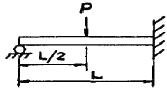
- 0
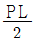
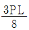
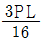
(정답률: 48%)
20. 길이가 1m, 지름이 50mm, 전단탄성계수 G = 75 GPa인 환봉축에 800Nㆍm의 토크가 작용될 때 비틀림각은 약 몇 도인가?
- 1°
- 2°
- 3°
- 4°
(정답률: 57%)
2과목: 기계열역학
21. 4 kg의 공기르르 온도 15℃에서 일정 체적으로 가열하여 엔트로피가 3.35 kJ/K 증가하였다. 가열 후 온도는 어느 것에 가장 가까운가? (단, 공기의 정적 비열은 0.717 kJ/kg℃이다.)
- 927K
- 337K
- 535K
- 483K
(정답률: 52%)
22. 전류 25A, 전압 13V를 가하여 축전지를 충전하고 있다. 충전하는 동안 축전지로부터 15W의 열손실이 있다. 축전지의 내부에너지는 어떤 비율로 변하는가?
- +310 J/s
- -310 J/s
- +340 J/s
- -340 J/s
(정답률: 40%)
23. 어떤 사람이 만든 열기관을 대기압 하에서 물의 빙점과 비등점 사이에서 운전할 때 열효율이 28.6%였다고 한다. 다음에서 옳은 것은?
- 이론적으로 판단할 수 없다.
- 경우에 따라 있을 수 있다.
- 이론적으로 있을 수 있다.
- 이론적으로 있을 수 없다.
(정답률: 45%)
24. 1 kg의 공기가 압력 P1 = 100 kPa, 온도 t1 = 20 ℃의 상태로부터 P2 = 200 kPa, 온도 t2 = 100 ℃의 상태로 변화하였다면 체적은 약 몇 배로 되는가?
- 0.64
- 1.57
- 3.64
- 4.57
(정답률: 41%)
25. 기체가 167 kJ의 열을 흡수하고 동시에 외부로 20 kJ의 일을 했을 때, 내부에너지의 변화는?
- 약 187 kJ 증가
- 약 187 kJ 감소
- 약 147 kJ 증가
- 약 147 kJ 감소
(정답률: 51%)
26. 성능계수가 3.2인 냉동기가 시간동 20 MJ의 열을 흡수한다. 이 냉동기를 작동하기 위한 동력은 몇 KW인가?
- 2.25
- 1.74
- 2.85
- 1.45
(정답률: 54%)
27. 이상기체를 단열팽창시키면 온도는 어떻게 되는가?
- 내려간다.
- 올라간다.
- 변화하지 않는다.
- 알 수 없다.
(정답률: 30%)
28. 가정용 냉장고를 이용하여 겨울에 난방을 할 수 있다고 주장하였다면 이 주장은 이론적으로 열역학 법칙과 어떠한 관계를 갖겠는가?
- 열역학 1법칙에 위배된다.
- 열역학 2법칙에 위배된다.
- 열역학 1, 2법칙에 위배된다.
- 열역학 1,2 법칙에 위배되지 않는다.
(정답률: 36%)
29. 표준 대기압, 온도 100℃ 하에서 포화액체 물 1 kg이 포화증기로 변하는데 열 2255 kJ이 필요하였다. 이 증발과정에서 엔트로피(entropy)의 증가량은 얼마인가?
- 18.6 kJ/kgㆍK
- 14.4 kJ/kgㆍK
- 10.2 kJ/kgㆍK
- 6.0 kJ/kgㆍK
(정답률: 57%)
30. 밀폐시스템에서 초기 상태가 300 K, 0.5 m3 인 공기를 등온과정으로 150 kPa에서 600 kPa까지 천천히 압축하였다. 이 과정에서 공기를 압축하는데 필요한 일은 약 몇 kJ인가?
- 104
- 208
- 304
- 612
(정답률: 49%)
31. 다음 중 이상적인 오토사이클의 효율을 증가시키는 방안으로 맞는 것은?
- 최고온도 증가, 압축비 증가, 비열비 증가
- 최고온도 증가, 압축비 감소, 비열비 증가
- 최고온도 증가, 압축비 증가, 비열비 감소
- 최고온도 감소, 압축비 증가, 비열비 감소
(정답률: 44%)
32. 25℃, 0.01 MPa 압력의 물 1 kg을 5 MPa 압력의 보일러로 공급할 때 펌프가 가역단열 과정으로 작용한다면 펌프에 필요한 일의 양에 가장 가까운 값은? (단, 물의 비체적은 0.001 m3/kg이다.)
- 2.58 kJ
- 4.99 kJ
- 20.10 kJ
- 40.20 kJ
(정답률: 55%)
33. 출력 10000 kW의 터빈 플랜트의 매시 연료소비량이 5000 kg/hr이다. 이 플랜트의 열효율은? (단, 연료의 발열량은 33440 kJ/kg 이다.)
- 25%
- 21.5%
- 10.9%
- 40%
(정답률: 57%)
34. 초기에 온도 T, 압력 P 상태의 기체의 질량 m이 들어있는 견고한 용기에 같은 기체를 추가로 주입하여 질량 3m이 온도 2T 상태로 들어가게 되었다. 최종 상태에서 압력은? (단, 기체는 이상기체이다.)
- 6P
- 3P
- 2P
- 3P/2
(정답률: 48%)
35. 다음 정상유동 기기에 대한 설명으로 맞는 것은?
- 압축기의 가역 단열 공기(이상기체)유동에서 압력이 증가하면 온도는 감소한다.
- 일차원 정상유동 노즐 내 작동 유체의 출구 속도는 가역 단열과정이 비가역 과정보다 빠르다.
- 스로틀(throttle)은 유체의 급격한 압력증가를 위한 장치이다.
- 디퓨저(diffuser)는 저속의 유체를 가속시키는 기기로 압축기 내 과정과 반대이다.
(정답률: 34%)
36. 온도가 127℃, 압력이 0.5 MPa, 비체적이 0.4 m3/kg 인 이상기체가 같은 압력 하에서 비체적이 0.3m3/kg으로 되었다면 온도는 약 몇 ℃ 인가?
- 16
- 27
- 96
- 300
(정답률: 47%)
37. 온도 5℃ 와 35℃ 사이에서 작동되는 냉동기의 최대 성능계수는?
- 10.3
- 5.3
- 7.3
- 9.3
(정답률: 54%)
38. 흡수기 냉동기에서 고온의 열을 필요로 하는 곳은?
- 응축기
- 흡수기
- 재생기
- 증발기
(정답률: 17%)
39. 다음의 기본 랭킨 사이클의 보일러에서 가하는 열량은 엔탈피의 값으로 표시하였을 때 올바른 것은? (단, h는 엔탈피이다.)
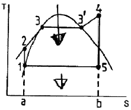
- h5 - h1
- h4 - h5
- h4 - h2
- h2 - h1
(정답률: 43%)
40. 포화상태량 표를 참조하여 온도 -42.5℃, 압력 100kPa 상태의 암모니아 엔탈피를 구하면?
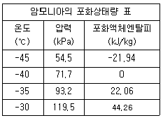
- -10.97 kJ/kg
- 11.03 kJ/kg
- 27.80 kJ/kg
- 33.16 kJ/kg
(정답률: 24%)
3과목: 기계유체역학
41. 다음의 그림과 같이 밑면이 2m×2m인 탱크에 비중 0.8인 기름이 떠 있을 때 밑면이 받는 계기압력(게이지압력)은 몇 kPa인가? (단, 물의 밀도는 1000kg/m3이고, 중력가속도는 9.8m/s2이다.
- 22.1
- 19.6
- 17.64
- 15.68
(정답률: 54%)
42. 그림과 같이 비중이 0.83인 기름이 12m/s의 속도로 수직 고정평판에 직각으로 부딪치고 있다. 판에 작용되는 힘 F는 몇 N인가?
- 23.5
- 28.9
- 288.6
- 234.7
(정답률: 54%)
43. 부를돈과 압력계(Bourdon gauge)에서 압력에 대한 설명으로 가장 올바른 것은?
- 액주의 중량과 평형을 이룬다.
- 탄성력과 평형을 이룬다.
- 마찰력과 평형을 이룬다.
- 게이지압력과 평형을 이룬다.
(정답률: 20%)
44. 두 유선 사이의 유동함수 차이 값과 가장 관련이 있는 것은?
- 질량유량
- 유량
- 압력수두
- 속도수두
(정답률: 22%)
45. 그림에서 입구 A에서 공기의 압력은 3×105 Pa(절대압력), 온도 20℃, 속도 5m/s이다. 그리고 출구 B에서 공기의 압력은 2×105 Pa(절대압력), 온도 20℃이면 출구 B에서의 속도는 몇 m/s 인가? (단, 공기는 이상기체로 가정한다.)
- 13.3
- 25.2
- 30
- 36
(정답률: 20%)
46. 다음의 그림과 같이 반지름 R인 한 쌍의 평행 원판으로 구성된 절도측정기(parallel plate viscometer)를 사용하여 액체시료의 점성계수를 측정하는 장치가 있다. 위쪽의 원판은 아래쪽 원판과 높이 h를 유지하고 각속도 ω로 회전하고 있으며 갭 사이를 채운 유체의 정도는 위 평판을 정상적으로 돌리는데 필요한 토크를 측정하여 계산한다. 갭 사이의 속도 분포는 선형적이며, Newton 유체일 때, 다음 중 회전하는 원판의 밑면에 작용하는 전단응력의 크기에 대한 설명으로 맞는 것은?
- 중심축으로부터의 거리에 관계없이 일정하다.
- 중심축으로부터의 거리에 비례하여 선형적으로 증가한다.
- 중심축으로부터의 거리의 제곱으로 증가한다.
- 중심축으로부터의 거리에 반비례하여 감소한다.
(정답률: 37%)
47. 공기가 평판 위를 3m/s의 속도로 흐르고 있다. 선단에서 50cm 떨어진 곳에서의 경계층 두께는? (단, 공기의 동점성계수 v = 16×10-6 m2/s이다.)
- 0.08 mm
- 0.82 mm
- 8.2 mm
- 82 mm
(정답률: 34%)
48. 입구 단면직이 20cm2 이고 출구 단면적이 10cm2 인 노즐에서 물의 입구 속도가 1 m/s일 때, 입구와 출구의 압력차이 P입구 - P출구는 약 몇 kPa 인가? (단, 노즐은 수평으로 놓여있고 손실은 무시할 수 있다.)
- -1.5
- 1.5
- -2.0
- 2.0
(정답률: 47%)
49. 밸브(지름 0.3 m)에 연결된 수평원관(지름 0.3 m)에 물(동점성계수 v = 1.0×10-6 m2/s, 밀도 ρ = 997.4 kg/m3)이 유속 2.0 m/s로 유동할 때 손실 동력이 5 kW 이었다. 이것은 공기 (v=1.5×10-5 m2/s, ρ = 1.177 kg/m3)로 완전히 상사한 조건에서 지름 0.15 m인 수평원관에서 실험한다면 손실동력은 약 몇 kW인가?
- 6.0
- 39.8
- 51.4
- 159.0
(정답률: 13%)
50. 유체입자가 일정한 기간 내에 이동한 경로를 이은 선은?
- 유선
- 유맥선
- 유적선
- 시간선
(정답률: 37%)
51. 가로 5m, 세로 4m의 직사각형 평판이 평판 면과 수직한 방향으로 정지된 공기 속에서 10 m/s로 운동할 때 필요한 동력은 약 몇 kW인가? (단, 공기의 밀도는 1.23 kg/m3, 정면도 항력계수는 1.1 이다.)
- 1.3
- 13.5
- 18.1
- 324.1
(정답률: 38%)
52. 물을 사용하는 원심 펌프의 설계점에서의 전 양정이 30 m이고 유량은 1.2 m3/min 이다. 이 펌프의 전효율이 80%라면 이 펌프를 1200 rpm의 설계점에서 운전할 때 필요하나 축동력을 공급하기 위한 토크는 몇 Nㆍm인가?
- 46.7
- 58.5
- 467
- 585
(정답률: 41%)
53. 지름이 5 cm인 비누풍선 속의 내부 초과 압력은 2.08 Pa이다. 이 비누막의 표면 장력은 몇 N/m인가?
- 1.3 × 10-3
- 5.2 × 10-3
- 5.2 × 10-2
- 1.3 × 10-2
(정답률: 42%)
54. 다음 중 물리량의 차원이 틀리게 표시된 것은? (단, F : 힘, M : 질량, L : 길이, T : 시간을 의미한다.)
- 선운동량 : MLT-1
- 각운동량 : ML2T-1
- 통력 : FLT-1
- 에너지 : MLT-1
(정답률: 46%)
55. 그림과 같이 지름 D와 깊이 H의 원통 용기 내에 액체가 가득 차 있다. 수평방향으로의 등가속도 (가속도 = a) 운동을 하여 내부의 물의 35%가 흘러 넘쳤다면 가속도 a와 중력가속도 g의 관계로 올바른 것은? (단, D = 1.2H 이다.)
- a = 1.2 g
- a = 0.8 g
- a = 0.58 g
- a = 1.42 g
(정답률: 32%)
56. 지름이 일정하고 수평으로 놓여진 원관 내의 유동이 완전 발달된 층류 유동일 경우 압력은 유동의 진행 방향으로 어떻게 변화하는가?
- 선형으로 감소한다.
- 선형으로 증가한다.
- 포물선형으로 증가한다.
- 포물선형으로 감소한다.
(정답률: 13%)
57. 어느 장치에서의 유량 Q m3/s는 지름 D cm, 높이 H m, 중력가속도 g m/s2, 동정성계수 v m2/s 와 관계가 있다. 차원해석(파이정리)을 하여 무차원수 사이의 관계식으로 나타내고자 할 때 최소한 필요한 무차원수는 몇 개인가?
- 2
- 3
- 4
- 5
(정답률: 43%)
58. 위가 열린 원뿔형 용기에 그림과 같이 물이 채워져 있을 때 아래면(반지름 0.5m)에 작용하는 정수력은 약 몇 kN인가?
- 0.77
- 2.28
- 3.08
- 3.84
(정답률: 24%)
59. 수평 원관 속을 흐르는 유체의 층류 유동에서 관마찰계수는?
- 상대조도만의 함수이다.
- 마하수만의 함수이다.
- 레이놀즈수만의 함수이다.
- 프루드수만의 함수이다.
(정답률: 57%)
60. 안지름이 30mm, 길이 1.5m인 파이프 안을 유체가 난류 상태로 유동하여 압력손실이 14715 Pa로 나타났다. 관벽에 나타나는 전단응력은 약 몇 Pa인가?
- 7.35 × 10-3
- 73.5
- 7.35 × 10-5
- 7350
(정답률: 36%)
4과목: 기계재료 및 유압기기
61. 순철의 자기변태와 동소변태를 설명한 것으로 틀린 것은?
- 동소변태란 결정격자가 변하는 변태를 말한다.
- 자기변태도 결정격자가 변하는 변태이다.
- 동소변태점은 A3점과 A4점이 있다.
- 자기변태점은 약 768℃정도이며 일명 큐리(curie)점이라 한다.
(정답률: 73%)
62. 같은 조건하에서 금속의 냉각속도가 빠르면 조작은 어떻게 변하는가?
- 결정입자가 미세해진다.
- 냉각속도와 금속의 조직과는 관계가 없다.
- 금속의 조직이 조대해진다.
- 소수의 핵이 성장해서 응고된다.
(정답률: 65%)
63. 다음의 탄소강 조직 중 일반적으로 경도가 가장 낮은 것은?
- 페라이트
- 트루스타이트
- 마텐자이트
- 시멘타이트
(정답률: 76%)
64. 금속을 소성가공 할 때에 냉간가공과 열간가공을 구분하는 온도는?
- 담금질온도
- 변태온도
- 재결정온도
- 단조온도
(정답률: 75%)
65. 베이나이트(bainite)조직을 얻기 위한 항온열처리 조작으로 가장 적합한 것은?
- 오스포밍
- 마아퀜칭
- 오스템퍼링
- 마템퍼링
(정답률: 63%)
66. 황(S) 성분이 적은 선철을 용해로, 전기로에서 용해한 후 주형에 주입 전 마그네슘, 세륨, 칼슘 등을 첨가시켜 흑연을 구상화한 것은?
- 황금주철
- 구상흑연주철
- 칠드주철
- 가단주철
(정답률: 79%)
67. 경도가 대단히 높아 압연이나 단조작업을 할 수 없는 조직은?
- 시멘타이트(cementite)
- 오스테나이트(austenite)
- 페라이트(ferrite)
- 펄라이트(pearlite)
(정답률: 61%)
68. 특구상에 포함된 Ni원소의 영향이다. 틀린 것은?
- Martensite 조직을 안정화시킨다.
- 담금질성이 증대된다.
- 저온 취성을 방지한다.
- 내식성이 증가한다.
(정답률: 36%)
69. 탄소강을 풀림(Annealing)하는 목적과 관계없는 것은?
- 결정입도 조절
- 상온가공에서 생긴 내부응력 제거
- 오스테나이트에서 탄소를 유리시킴
- 재료에 취성과 경도부여
(정답률: 56%)
70. 주철에서 쇳물의 유동성을 감소시키는 가장 주된 원소는?
- P
- Mn
- S
- Si
(정답률: 42%)
71. 유압기기에 사용되는 개스킷(gasket)의 용어 설명으로 다음 중 가장 적합한 것은?
- 고정부분에 사용되는 실(seal)
- 운동부분에 사용되는 실(seal)
- 대기로 개방되어 있는 구멍
- 흐름의 단면적을 감소시켜 관로 내 저항을 갖게 하는 기구
(정답률: 68%)
72. 그림의 유압회로는 시퀀스 밸브를 이용한 시퀀스 회로이다. 그림의 상태에서 2위치 4포트 밸브를 조작하여 두 실린더를 작동시킨 후 2위치 4포트 밸브를 반대방향으로 조작하여 두 실린더를 다시 작동시켰을 때 두 실린더의 작동순서(①~④)로 올바른 것은? (단, ①, ②는 A 실린더의 운동방향이고, ③, ④는 B 실린더의 운동방향이다.)
- ① → ② → ③ → ④
- ② → ④ → ① → ③
- ③ → ① → ② → ④
- ① → ③ → ④ → ②
(정답률: 48%)
73. 그림과 같은 유압회로의 명칭으로 옳은 것은?
- 임의 위치 로크회로
- 증강 회로
- 독립 작동 시퀀스 회로
- 미터 아웃 회로
(정답률: 67%)
74. 그림과 같은 유압기호의 명칭은?
- 필터
- 드레인 배출기
- 가열기
- 온도 조절기
(정답률: 73%)
75. 유압 펌프에서 토출되는 최대 유량이 50 L/min일 때 펌프 흡입측의 배관 안지름으로 가장 적합한 것은? (단, 펌프 흡입측 유속은 0.6 m/s이다.)
- 22 mm
- 42 mm
- 62 mm
- 82 mm
(정답률: 68%)
76. 유압밸브의 전환 도중에서 과도적으로 생긴 밸브 포트 사이의 흐름을 의미하는 유압 용어는?
- 랩(lap)
- 풀 컷 오프(pull cut-off)
- 서지 압(surge pressure)
- 인터 플로(inter-flow)
(정답률: 75%)
77. 부하의 낙하를 방지하기 위하여 배압(back pressure)을 부여하는 밸브는?
- 카운터 밸런스 밸브(counter balance valve)
- 릴리프 밸브(relief valve)
- 무부하 밸브(unleading valve)
- 시퀀스 밸브(sequence valve)
(정답률: 75%)
78. 어큐뮬레이터는 고압 용기이므로 장착과 취급에 각별한 주의가 요망된다. 이에 관련된 설명으로 틀린 것은?
- 점검 및 보수가 편리한 장소에 설치한다.
- 어큐뮬레이터에 용접, 가공, 구멍뚫기 등은 금지한다.
- 충격 완충용으로 사용할 경우는 가급적 충격이 발생하는 곳으로부터 멀리 설치한다.
- 펌프와 어큐뮬레이터와의 사이에는 체크밸브를 설치하여 유압유가 펌프 쪽으로 역류하는 것을 방지한다.
(정답률: 72%)
79. 유압유의 점도가 낮을 때 유압 장치에 미치는 영향에 대한 설명으로 거리가 먼 것은?
- 내부 및 외부의 기름 누출 증대
- 마모의 증대와 압력 유지 곤란
- 펌프의 용적 효율 저하
- 마찰 증가에 따른 기계 효율의 저하
(정답률: 50%)
80. 유압 기본회로 중 미터인 회로에 대한 설명으로 틀린 것은?
- 유량제어 밸브는 실린더 입구 측에 설치한다.
- 펌프의 송출압은 릴리프밸브 설정압으로 정해진다.
- 유량 여분이 필요치 않아 동력손실이 거의 없다.
- 속도제어 회로로 체크밸브에 의하여 한 방향만의 속도가 제어된다.
(정답률: 59%)
5과목: 기계제작법 및 기계동력학
81. 구성인선(built-up edge)의 방지 대책으로 옳은 것은?
- 절삭깊이를 많게 한다.
- 절삭속도를 느리게 한다.
- 절삭공구 경사각을 작게 한다.
- 절삭공구의 인선을 예리하게 한다.
(정답률: 61%)
82. 다음 중 나사의 각도, 피치, 호칭지름의 측정이 가능한 측정기는?
- 사인바
- 정밀수준기
- 공구현미경
- 버니어캘리퍼스
(정답률: 49%)
83. CNC 프로그래밍에서 G 기능이란?
- 보조기능
- 이송기능
- 주축기능
- 준비기능
(정답률: 47%)
84. 가공액은 물이나 경유를 사용하여 세라믹에 구멍을 가공할 수 있는 것은?
- 래핑 가공
- 전주 가공
- 전해 가공
- 초음파 가공
(정답률: 44%)
85. 밀링작업의 단식 분할법으로 이(tooth)수 가 28개인 스퍼기어를 가공할 때 브라운샤프형 분할판 No2 21구멍열에서 분할 크랭크의 회전수와 구멍수는?
- 0회전시키고 6구멍씩 전진
- 0회전시키고 9구멍씩 전진
- 1회전시키고 6구멍씩 전진
- 1회전시키고 9구멍씩 전진
(정답률: 32%)
86. 표면이 서로 다른 모양으로 조각된 1쌍의 다이를 이용하여 메달, 주화 등을 가공하는 방법은?
- 벌징(bulging)
- 코이닝(coining)
- 스피닝(spinning)
- 엠보싱(embossing)
(정답률: 58%)
87. 납, 주석, 알루미늄 등의 연한 금속이나 얇은 판금의 가장자리를 다듬질 작업할 때 사용하는 줄눈의 모양은?
- 귀목
- 단목
- 복목
- 파목
(정답률: 49%)
88. 프레스 가공의 보조장치 중 판금재료 바깥둘레의 변형을 방지하기 위하여 사용하는 것은?
- 다이 세트
- 다이 홀더
- 판 누르게
- 금형 가이드
(정답률: 42%)
89. 금속의 표면을 단단하게 하기 위한 물리적인 표면 경화법은?
- 청화법
- 질화법
- 침탄법
- 화염 경화법
(정답률: 52%)
90. 초음파가공에서 나타나는 현상 및 작용에 대한 설명 중 틀린 것은?
- 공구의 해머링 작용에 의한 가공물의 미세한 파쇄
- 혼의 재료는 황동, 연강, 공구강 등을 사용
- 가공물 표면에서의 증발현상
- 가속된 연삭입자의 충격작용
(정답률: 21%)
91. 높이 2h인 창문에서 질량 m인 물체를 떨어뜨렸는데 지상에 있는 사람이 이 물체를 받았을 경우 이 사람이 받은 충격량은 얼마인가?
- mg
(정답률: 29%)
92. 반경 1 m, 질량 2 kg 인 균일한 디스크가 그림과 같은 30도 경사면에 놓여 있다. 정지 상태에서 놓아 주어 10 m 굴러갔을 때 디스크 중심부의 속도는 약 몇 m/s 인가? (단, 디스크와 경사면 사이에는 미끄러짐이 없으며 중력가속도는 10 m/s2으로 계산한다.)
- 4.1
- 6.2
- 8.2
- 10.4
(정답률: 27%)
93. 그림과 같이 길이 L, 질량 m 인 일정 단면의 가늘고 긴 봉에서 봉의 한 끝을 지나고 봉에 수직인 축에 대한 질량관성모멘트 Iy는?
(정답률: 42%)
94. 반지름이 R인 구가 수평한 평면 위를 그림과 같이 미끄러짐 없이 구르고 있다. 중심점 0의 속도가 V일 때 A점 속도의 크기는?
- V
(정답률: 30%)
95. 스프링 상수가 1 N/cm인 스프링의 양끝을 고정시키고 스프링의 중앙점에 질량 1 kg의 질점을 붙였다. 이 시스템의 주기는?
- 0.314 s
- 0.628 s
- 1.257 s
- 1.571 s
(정답률: 12%)
96. 비강쇠자유진동수 ωn와 감쇠자유진동수 ωd사이의 관계를 정확히 표시한 것은? (단, ζ는 감쇠비를 나타낸다.)
(정답률: 57%)
97. 최대가속도가 720 cm/s2이고, 매분 480사이클의 진동수로 조회운동을 하고 있는 물체의 진동 진폭은?
- 2.85 mm
- 5.71 mm
- 11.42 mm
- 28.52 mm
(정답률: 29%)
98. 그림에서 자전거 선수는 2m/s2의 일정 가속도로 달리고 있다. 만약 정지상태에서 출발하였다면 5초 후의 위치는? (단, 지면과 자전거의 마찰은 무시한다.)
- 10 m
- 12.5 m
- 20 m
- 25 m
(정답률: 48%)
99. 운동방정식 에서 변위에 대한 식이 로 표시될 때 초기조건에 의해 결정되어야 할 임의상수는?
- X 와 X0
- X 와 ø1
- X0 와 ø1
- X0 와 ø2
(정답률: 22%)
100. 질량이 m 인 공이 그림과 같이 속력이 v, 각도가 α 로 질량이 큰 금속판에 사출되었다. 만일 공과 금속판 사이의 반발계수가 0.8 이고, 공과 금속판 사이의 마찰이 무시된다면 입사각 α 와 출사각 β 의 관계는?
- β = 0
- α ＞ β
- α = β
- α ＜ β
(정답률: 48%)
ΔL = LαΔT
여기서 ΔL은 막대의 길이 변화량, L은 막대의 길이, α는 선팽창계수, ΔT는 온도 변화량을 나타낸다. 이를 통해 막대의 길이 변화량을 구할 수 있다.
ΔL = 50 mm × 0.16×10-4/℃ × 40℃ = 0.032 mm
막대의 길이 변화량을 통해 응력을 구할 수 있다.
σ = EΔL/L
여기서 E는 탄성계수를 나타내며, L은 막대의 길이를 나타낸다. 이를 대입하면 다음과 같다.
σ = 110 GPa × 0.032 mm / 50 mm = 0.0704 GPa
막대의 단면적을 구하면 다음과 같다.
A = πr2 = π(10 mm)2 = 314.16 mm2
고정단을 누르는 힘은 응력과 단면적을 곱한 값이다.
F = σA = 0.0704 GPa × 314.16 mm2 = 22.13 kN
따라서, 고정단을 누르는 힘은 약 22 kN이다. 정답은 "22"이다.